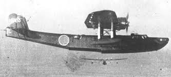

Летающая лодка Каваниси тип 97 модель 22, Kawanishi H6K4 (codename «Mavis»)
Летающая лодка, четырехмоторный цельнометаллический моноплан-парасоль с двухкилевым оперением. Опытный образец, лодка тип S, впервые поднялась в небо 14.07.1936. Принята на вооружение Японским Императорским Флотом (Imperial Japanese Navy) как летающая лодка тип 97 в 1937 г. Серийное производство начато в сентябре 1938 г.
Наиболее массовая модификация летающей лодки модель 22 (H6K4) была создана в 1940 г, и оснащалась 14-цилиндровыми двухрядными звездообразными двигателями воздушного охлаждения Мицубиси Кинсей 43 мощностью в 1000 л с (на первых 119 самолетах). Затем устанавливался несколько более мощный и высотный Кинсей 46. H6K4 имела увеличенный запас топлива, что позволило довести продолжительность полета до 25 часов, а дальность до 6000 км. Лодки 22 модели получили бортовые блистеры, оснащённые пулемётными турелями, за счёт этого хвостовая секция была несколько удлинена.
Оборонительное вооружение включало четыре 7,7-мм пулемета тип 97 (Lewis) с боекомплектом 582 патронов на ствол и 20-мм пушку тип 99-I с боекомплектом 432 снаряда в кормовой турели. На внешней подвеске лодка могла нести либо 12 бомб калибром 60 кг, либо 4 250 кг бомбы, либо две 800 кг торпеды тип 91 модель 1.
Существенным недостатком всех летающих лодок H6K было отсутствие бронирования для защиты экипажа и агрегатов, и протектирования топливных баков. Всё это было принесено в жертву колоссальной дальности полёта. Только начав нести неоправданные потери, на поздних самолётах 22 модели конструкторы озаботились защитой экипажа.
Летающие лодки H6K начали боевые действия с налёта на остров Уэйк 11.12.1941, затем они широко использовались в ходе начального этапа войны на Тихом океане. Занимались дальней разведкой, сопровождением конвоев, поиском подводных лодок, наносили бомбовые удары, проводили поисково-спасательные операции (Search and Rescue). С принятием на вооружение нового гидросамолета - дальнего разведчика H8K, летающие лодки H6K начали переоборудоваться в транспортные самолеты. Находились в эксплуатации вплоть до капитуляции Японии в 1945 г.
Всего было построено 127 летающих лодок H6K4, из 217 произведенных H6K всех модификаций.